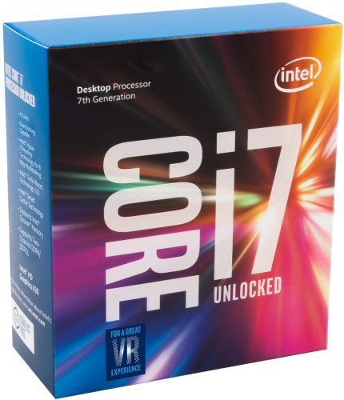
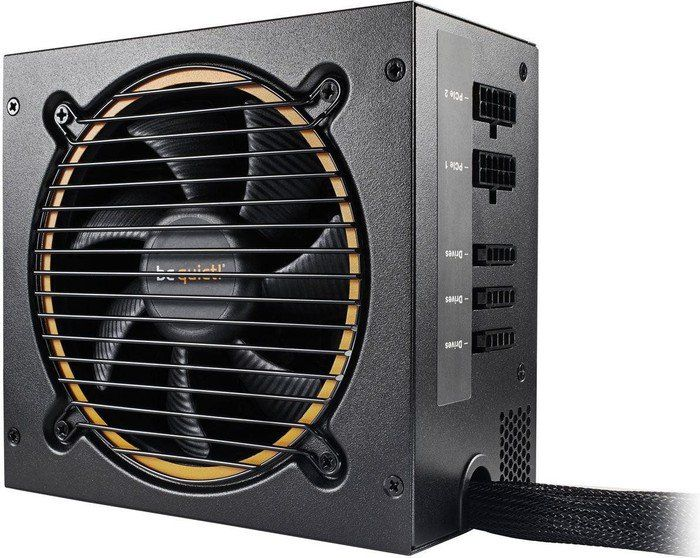

a)P³yta g³ówna

P³yta g³ówna (ang. motherboard, mainboard) – obwód drukowany urz¹dzenia elektronicznego, na którym montuje siê najwa¿niejsze elementy, umo¿liwiaj¹c komunikacjê wszystkim pozosta³ym komponentom i modu³om.[1]
W komputerze na p³ycie g³ównej znajduj¹ siê: procesory, pamiêæ operacyjna lub gniazda do zainstalowania tych urz¹dzeñ oraz gniazda do zainstalowania dodatkowych p³yt zwanych kartami rozszerzaj¹cymi (np. PCI), oraz gniazda do urz¹dzeñ sk³aduj¹cych (dyski twarde, napêdy optyczne itp.), z³¹cze klawiatury i zasilacza.
"https://pl.wikipedia.org/wiki/P%C5%82yta_g%C5%82%C3%B3wna"
-
Podstawowe cechy:
-Chipset: Intel Z170
-Czêstotliwoœci pracy pamiêci [MHz]: 2133, 3200, 2600, 2400, 2800, 3000
-Gniazda pamiêci: DDR4
-Gniazdo procesora: Socket 1151
-Panel tylny: 1x PS/2 (klawiatura/mysz), 2x USB 2.0, 1x D-Sub (VGA), 6x wyjœcie audio, 4x USB 3.1 gen 1, 1x RJ-45, 1x DVI-D, 1x DisplayPort
b)Procesor

Procesor, CPU (ang. central processing unit), GPU (ang. graphics processing unit) – sekwencyjne urz¹dzenie cyfrowe, które pobiera dane z pamiêci, interpretuje je i wykonuje jako rozkazy. Wykonuje on ci¹g prostych operacji wybranych ze zbioru operacji podstawowych okreœlonych zazwyczaj przez producenta procesora jako lista rozkazów procesora.
"https://pl.wikipedia.org/wiki/Procesor"
-
Podstawowe cechy:
-Liczba rdzeni: 4
-Linia: Core i7
-Odblokowany mno¿nik: tak
-Typ gniazda: Socket 1151
-Za³¹czone ch³odzenie: Nie
-Czêstotliwoœæ taktowania procesora [GHz]: 4.2
-TDP [W]: 91
c)Karta graficzna

Karta graficzna – karta rozszerzeñ komputera odpowiedzialna za renderowanie grafiki i jej konwersjê na sygna³ zrozumia³y dla wyœwietlacza
"https://pl.wikipedia.org/wiki/Karta_graficzna"
-
Podstawowe cechy:
-DisplayPort: 2x DisplayPort
-Dodatkowe: Nie
-DVI: 1x DVI-D
-HDMI: 2x HDMI
-Iloœæ pamiêci RAM: 8 GB
d)Karta dŸwiêkowa

Karta dŸwiêkowa (ang. sound card, audio card) – komputerowa karta rozszerzeñ, umo¿liwiaj¹ca rejestracjê, przetwarzanie i odtwarzanie dŸwiêku. Poprawnym jest te¿ równie czêsto stosowany termin karta muzyczna.
"https://pl.wikipedia.org/wiki/Karta_d%C5%BAwi%C4%99kowa"
-
Podstawowe cechy:
-Interfejs: USB
-Rodzaj: Zewnêtrzna
-System dŸwiêku: 2.0
e)Napêdy CD, Dvd
 Napêd DVD – napêd przystosowany do odtwarzania i ewentualnie nagrywania p³yt w formacie DVD.
Napêd DVD – napêd przystosowany do odtwarzania i ewentualnie nagrywania p³yt w formacie DVD.
"https://pl.wikipedia.org/wiki/Nap%C4%99d_DVD"
Napêd optyczny (ang. Optical Disc Drive, ODD) – urz¹dzenie, które za pomoc¹ wi¹zki lasera odczytuje lub zapisuje dane na tzw. noœnikach optycznych.
"https://pl.wikipedia.org/wiki/Nap%C4%99d_optyczny"
-
Podstawowe cechy:
-Interfejs: SATA
-Kolor: Czarny
-Typ napêdu: DVD, CD, Blu-ray
f)Zasilacz

Zasilacz – urz¹dzenie s³u¿¹ce do dopasowania dostêpnego napiêcia do wymagañ zasilanego urz¹dzenia.
"https://pl.wikipedia.org/wiki/Zasilacz"
-
Podstawowe cechy:
-Certyfikat sprawnoœci: 80 Plus Silver
-Moc [W]: 600
-Modularne okablowanie: Tak
-Uk³ad PFC: Aktywny
-Zabezpieczenia: OTP, UVP, OPP, OCP, OVP, SCP